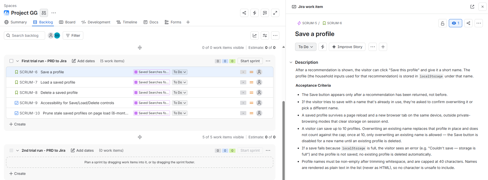

PRD to Jira Workflow
Problem
Turning a Product Requirements Document (PRD) into epics and user stories is time-consuming for product managers and developers. In my experience, gaps in acceptance criteria and non-functional requirements tend to surface late, causing costly rework or tech debt.
I wanted to build and test an agentic workflow that catches those gaps before anything reaches Jira, and fixes them with human input rather than just flagging them. Once the PRD is final, agents propose how the work should be split into Jira issues, and a human approves or changes that breakdown before anything is created.
Approach
A single agent with both PRD-editing judgement and live Jira write access is one agent whose mistakes can reach a real project. So I split the work into three pieces, each with one job and its own tool access:
- A reviewer subagent reads the PRD against a fixed rubric and reports gaps. It can't edit anything.
- An editing skill works through each gap with me inline, proposing before/after text that I approve before it's written.
- An epic-builder subagent is the only piece with Jira write access, and it only runs once I've signed off the PRD.
I stay in the loop at each handover: PRD sign-off first, then sign-off on the issue breakdown.
I then ran the pipeline on a real PRD for a saved-searches feature. The first review flagged 11 gaps, which I worked through in batches. Rather than assume my fixes had landed, I asked the reviewer for a second pass, which caught four more, including a retention policy with no stated mechanism. Only then did I approve the PRD for Jira.
Claude Code capabilities used
- Subagents with scoped tool access: a read-only reviewer and a Jira-writing epic builder, each isolated from the other's context and permissions.
- A project skill for editing: it runs inline in the main conversation, so I see and approve every change as it happens.
- Atlassian's official remote MCP server: hosted and OAuth-authenticated, so there was no custom Jira integration to build.
![Architecture of the PRD-to-Jira workflow: you provide a draft PRD, the prd-quality-reviewer subagent reports gaps, the improve-prd skill fixes them inline with your sign-off, looping until clean. You give a first sign-off that the PRD is final, the jira-epic-builder subagent proposes an Epic plus Story and Task breakdown, you give a second sign-off approving that breakdown, and only then are the Epic and its issues created in Jira Cloud via Atlassian's remote MCP server, read back afterwards to verify.](../images/prd-to-jira-workflow-architecture.svg)
Outcome
- A reusable pipeline that never reaches Jira without two explicit checkpoints: PRD sign-off, then breakdown sign-off.
- Proven end to end on a real PRD: 11 gaps fixed with individually approved edits, 4 more caught on re-review, and 6 Jira issues (one epic, five stories and tasks) created and verified by reading them back.
- I've shared the workflow and this case study with my PM team and encouraged them to try it, improve it and share feedback.
Repository

jira-epic-builder created the Epic and its five linked issues.